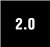

2.1. Program Output, the print Statement, and "Hello World!"In some languages, such as C, displaying to the screen is accomplished with a function, e.g., printf(), while with Python and most interpreted and scripting languages, it is a statement. Many shell script languages use an echo command for program output. Core Note: Dumping variable contents in interactive interpreter
Python's print statement, paired with the string format operator ( % ), supports string substitution, much like the printf() function in C: >>> print "%s is number %d!" % ("Python", 1)
Python is number 1!%s means to substitute a string while %d indicates an integer should be substituted. Another popular one is %f for floating point numbers. We will see more examples throughout this chapter. Python is fairly flexible, though, so you could pass in a number to %s without suffering any consequences with more rigid languages. See Section 6.4.1 for more information on the string format operator. The print statement also allows its output directed to a file. This feature was added way back in Python 2.0. The >> symbols are used to redirect the output, as in this example with standard error:  import sys print >> sys.stderr, 'Fatal error: invalid input!' Here is the same example with a logfile: logfile = open('/tmp/mylog.txt', 'a')
print >> logfile, 'Fatal error: invalid input!'
logfile.close() |